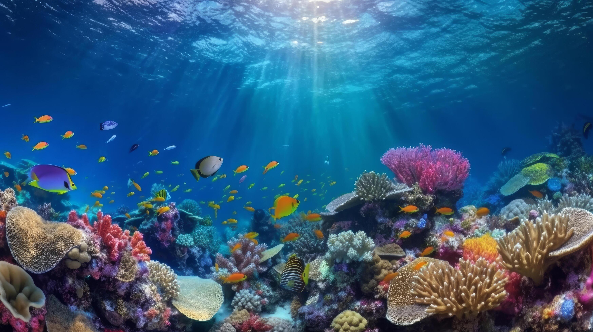
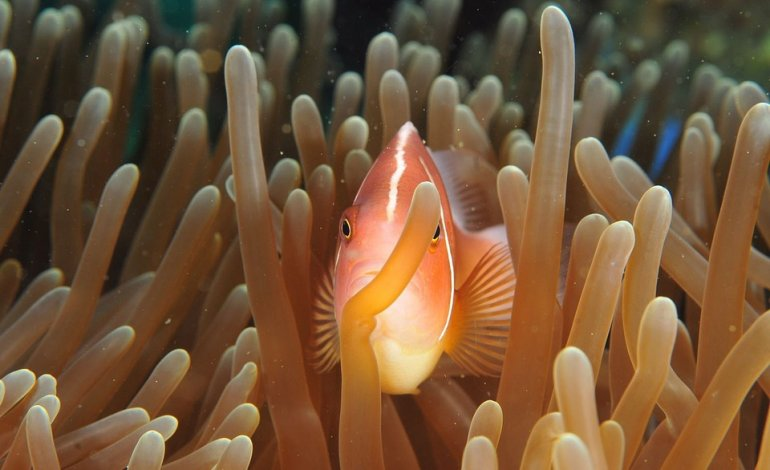

La vita marina comprende tutte le forme di vita che abitano gli oceani e i mari. Questi organismi giocano un ruolo cruciale nell'ecosistema globale, influenzando il clima e fornendo risorse vitali per l'uomo.

Gli oceani coprono oltre il 70% della superficie terrestre e ospitano una vasta gamma di biodiversità. Forniscono ossigeno, regolano il clima e sono una fonte di cibo e risorse.

La conservazione marina è essenziale per proteggere le specie e gli habitat marini minacciati da inquinamento, pesca eccessiva e cambiamenti climatici. Le aree marine protette sono un esempio di come possiamo aiutare a preservare questi ecosistemi fragili.